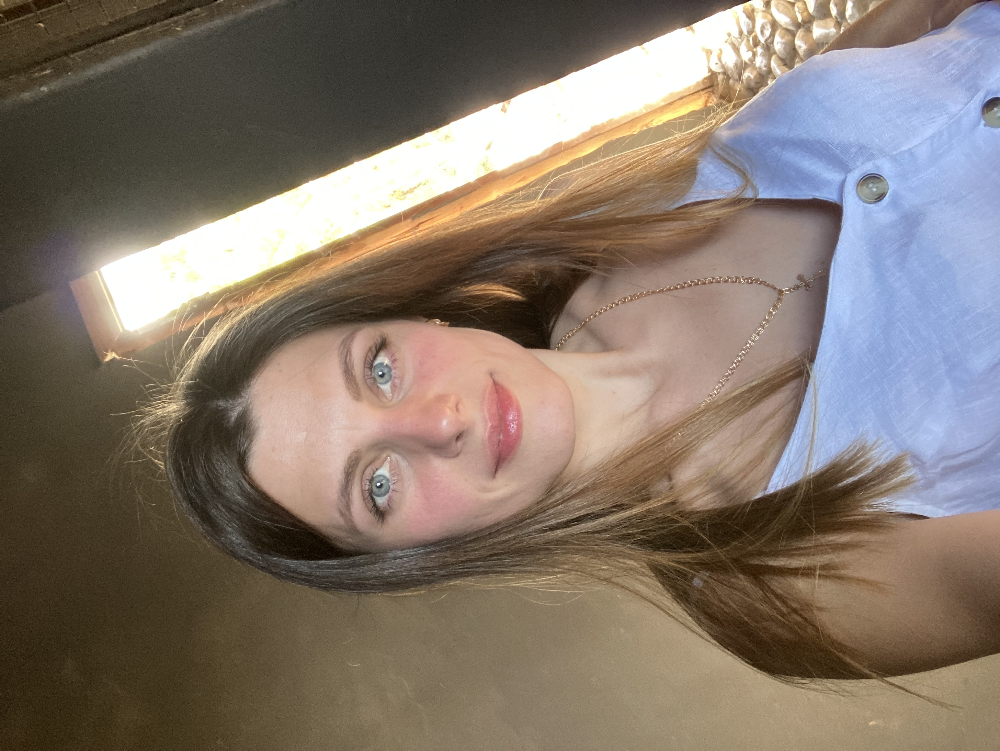

Элла Гермась
Мама двоих детей, Глеба и Софии.
Банковский работник (в прошлом), не вышла на работу после декрета. Решила, что это не мое и не хочу тратить свою жизнь на нелюбимое дело. Люблю шить - это хобби для души. Шью постельное белье, пледы, полотенца, иногда одежду детям. Также люблю готовить, особенно выпечку и всякие вкусняшки. В этом мне помогает мой сын, который постоянно выискивает новые рецепты. В свободное время читаю и смотрю сериалы. Мои самые любимые книги: "Джейн Эйр", "Поющие в терновнике".